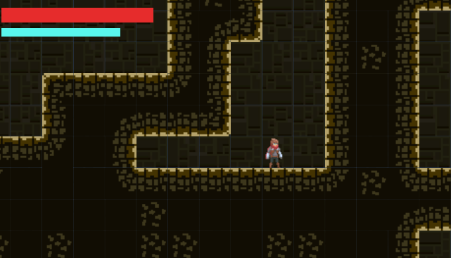
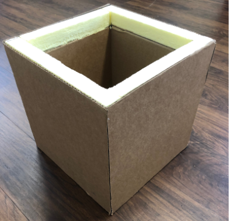

Hi, I'm J.R. I'm a computer science and theatre student at Northwestern University.
I am passionate about both software engineering and game development and seek to create programs and experiences to improve the lives of those around me. You can learn more about me here, and learn more about some of my work below.
Projects

Stormlight Archive Platformer
A simple 2D platformer demo made with Unity and C#. Learn more.

Blood Transport Cooler Prototype
Prototype of an optimized blood transport cooler designed for the Red Cross to maximize possible shipping time for blood samples while maintaining viable temperatures.